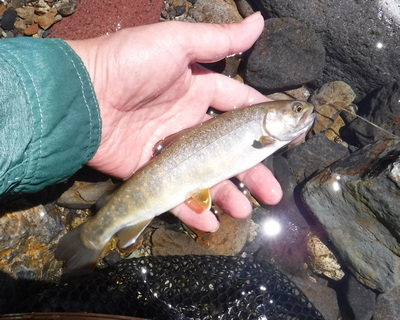
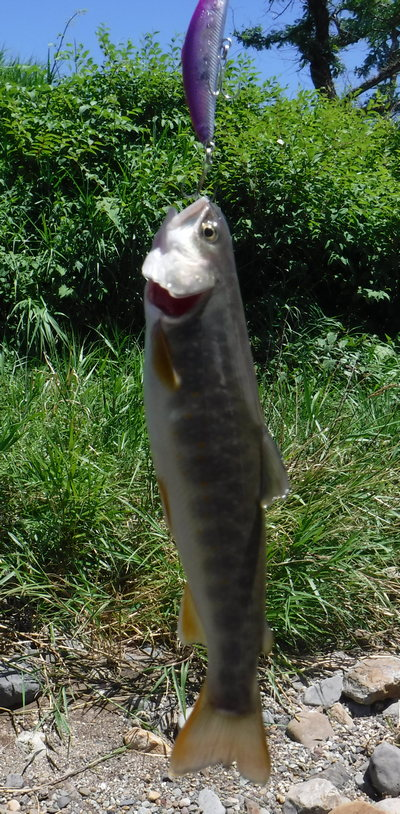
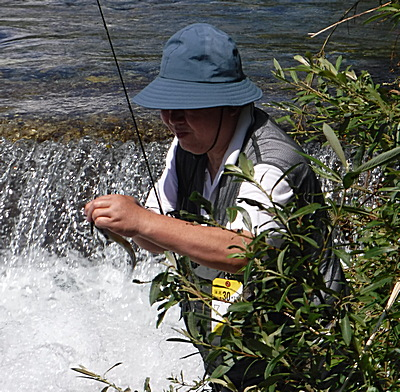
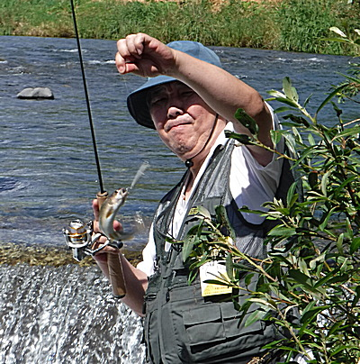
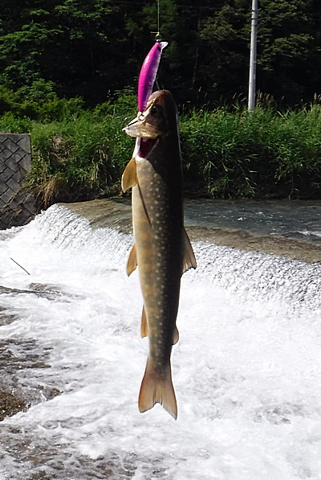
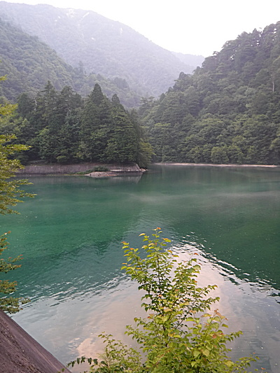

釣行日誌 故郷編
2018/07/15 叔父と甥
叔父と２人、昼過ぎにいつもの釣り場に着いた。お弁当をいただき、身支度を整え、ロッドを持って二手に分かれ、僕はいつもの小沢から通称「おじさんの淵」に入る。足音を潜めて上流から淵の頭に歩み寄り、ドクターミノー50mm-F ピンク色を投げ込んでみるが反応が無い。いつもなら１尾は顔を見せてくれるのだが。しばらく粘って通す筋を変えてみたりしたが、やはりダメ。ここはあきらめ、流れの中を静かに歩いて下って行く。
瀬の下の藪の影にもルアーを通すが、イワナのひらめきは無い。
ブロック護岸に沿った細長い淵、２カ所でもまったく反応が見られない。夏休み中の三連休の中日で、皆さんから相当虐められているようだ。とうとう本命の堰堤までやって来た。堰堤の上は、流れが二股になっており、細い方の流れは両側をボサボサの葦に囲まれている。この葦の根元のエグレには、イワナが居着いていることを知っているので、上流から遠投し、エグレに沿ってアクションを付けながら引いてくる。するとコツンという可愛いアタリがあって、それにふさわしいキュートなイワナがブルブルとロッドを揺すった。

何はともあれ今日の初物なので、ネットで丁重にすくい上げて何枚も写真を撮す。１日の最初の１尾に全てはある。これは開高さんの言葉だったか？
気を良くして用水の溝の中にミノーを通してみたりしたが、やはり反応は無い。（笑）
大本命の堰堤下の淵を攻めて見ると、第１投で深みの真ん中から魚影が飛び出してミノーを追った。しかし、瞬間的に見切られてそのイワナは引き返していった。
『えらい渋い反応をするなぁ....』
と、不思議に思ったが、その後の数投では何も起こらなかった。用水沿いに歩いて斜面を登り、イノシシ避けの電気柵を慎重に跨いで越え、道路に出ているであろう叔父を探した。しかし彼の姿は見えず、車で待つことにした。10分ほど経って、下流の繁みから叔父がヨタヨタと道路に上がってくるのが見えた。車までたどり着くのを待って話を聞くと、叔父も今日は芳しくないとのこと。例の本命堰堤では出なかったかと訊ねると、１尾出て喰わなかったらしい。それで合点がいった。あの１尾は叔父のルアーも見切っていて、用心深くなっていたのだ。
情報交換を終えると、いつものように車に乗って次のポイントを目指す。500mほど下流に橋があり、そのたもとに空き地があって車を停められるのだ。叔父と２人で橋の上から覗くと、深みの真ん中に、ここらでは珍しくアマゴが１尾泳いでいる。
「ありゃ釣れそうも無いねぇ.......」
「そうだなぁ.......」
などと消極的な会話を交わし、叔父は橋の上、僕は橋の下を目指して再度入渓する。春の出水でだいぶ川の様子が変わったようで、橋下の淵が浅くなっていた。そこは数投で見切って、僕の本命の下流の葦に囲まれた流れ込みを目指す。餌でもフライでも攻めにくいので、僕の好きなポイントなのである。下流へ向かってのキャストになるので、再び慎重にアプローチし、流れ込みのはるか下流へと、両岸の葦に投げ込まないよう気を付けてミノーを投射する。この深さならフローティングミノーで大丈夫。流れに乗って自然にアクションするミノーに少しだけトゥイッチを入れて引いてくると、１番深いあたりでかすかなアタリ。続いてロッドが震え、魚の控えめな生体反応が伝わってくる。案の定、可愛いイワナであった。今度はネットに入れず、魚体に触れずにペンチでフックを外し、リリースしてやった。

そこからさらに下流に下り、葦の間の瀬を攻めてみたが、何も反応が無いのでさっさとあきらめ、車に戻る。叔父も橋の上の淵では何も起こらなかったそうだ。またまた移動して、別の川の、通称「保育園裏の堰堤」を目指す。
着いてみると、ここも出水でだいぶ雰囲気が変わり、厄介だった右岸の柳が無くなっている。釣りやすくはなったが魚が望むカバーが失われたので良し悪しである。ここは堰堤の落ち込みにブロックが敷いてあって淵が無いので、勢いの良い流れ出しにミノーを投げる。川底がまったくフラットな砂利底で、イワナの隠れられるポイントが無く、案の定、反応も無い。昨年までは柳の根っこに隠れていたのになぁ、と残念に思った。
堰堤上のザラ瀬を攻めていた叔父にもアタリは無く、２人トボトボと車に戻る。付近に釣り人が居ないので、ここらでは釣れないのかもしれなかった。
さらに移動し、峠を越えて、また別の川へ移動する。やって来たのは、通称「爆釣の淵」。ここでは５年ほど前に、放流直後と思われる派手な色合いのイワナを叔父と２人で10尾以上釣ったことがあるのだ。それに加えて、空き地から足場良く水辺に降りられるので、最近腰痛に悩んでいる叔父にとっては楽な釣り場なのである。
さっそく岸に降り、２人して左岸から淵を攻める。するといきなり叔父が１尾釣り上げた。

「ほほ～！」
と感心してみていると、間を入れずに２尾目。

「へぇ～！！」
すかさず３尾目。またしても叔父の爆釣である。ルアーの色が違うからかなぁ？ピンクじゃダメかなぁ.......などと不思議に思っていると、叔父はさらに２尾を釣り上げて、５連発としたところで見かねて場所を替わってくれた。とうに還暦を迎えた叔父と、四捨五入すればはや60歳になってしまう僕ではあるが、いつまで経っても叔父と甥との関係は変わらないのであった。
叔父は場所を替わってくれただけではなく、丁寧にミノーを投げ込む場所と、通すコースと深さ、どの辺でアタックしてくるかまで詳しくレクチャーしてくれた。叔父に言われた通りにやってみると、いきなりアタリがあって、まずまずの型がロッドをしならせた。水面まで距離があるのでゴボウ抜きにして上げると、前後のフックがしっかり掛かってしまっていて、少々手荒なリリースになってしまった。やはりシングルフックに交換する必要があるなと再認識させられた。

改めて叔父の腕の確かさを目の当たりにして、僕は言葉も無く感心した。ホームセンターで買ったメッシュベスト、百均の雨合羽、2000円のリールを使い、決して釣りの技術論を語る人ではないが、ダレかに比べて叔父の腕は確かであった。
まずまずの型が出て、僕も嬉しくなり、気を良くして4月に大物を釣ったポイントを攻めてみたが、今日はなしのつぶてだった。まだ早かったが、今日はここまでということで車に戻った。ロッドを仕舞おうとすると叔父が、
「これから秘密のダムへ行くからそのままにしておけ」
と言うので、リールもルアーも付けたままで車に載せておいた。そこは、足回りは着替えても竿は出せるポイントだそうなので、濡れた短パン・シューズ・タイツは脱いでズボンに履き替えた。
帰りは僕の運転なので、いくつか村を抜け国道に出て1時間ほど走ったところで叔父が道案内を始めた。国道を逸れて集落を抜け、ひどく急な坂道を上っていく。聞けば、叔父が春に叔母さんといっしょにドライブがてらそのダム湖へ行って湖面を覗いたところ、何かは判らなかったが無数の魚影、そこそこの大きさの、が見えたと言う。
国道から離れて40分も走っただろうか、この先いったいどこまで行くのだろうかと少々不安になってきた。道幅は狭く、所々に巨大な岩が落ちて、なんとか普通車が１台通れるだけの幅しかない。
『マジか？！』
と思っていると巨大なダムの堤体が見え、ようやく目的地に着いた。
道路というか、林道の空き地に車を停め、ベストを着てロッドを持ち、叔父に連れられてその無数の魚影の見えた場所へ行ってみた。そこは山の上からかなり太い水管が引かれており、驚くほどの水量が湖面に放水されている。その流れ込みは確かに何か居そうな雰囲気だった。しかし今日は何も魚影は無く、深い緑色をした湖水がただ波立っていた。

こんなに激しい落ち込みとこの深さではスプーンの方が良いかなと思い、7gのコンデックスを結び遠投してみた。かなり深いので10まで数えて巻き始める。時折ロッドを少しあおってアクションを付けて引く。流れ込みの岸沿い、流心、沈木の上、いろいろコースを変えてスプーンを通してみると、１番流れの激しいあたりで黒い魚影が走った。
「出たっ！」
何度か身を翻してスプーンを追ったが、とうとう喰わせ切れずに魚影は消えた。
『今のはイワナっぽかったなぁ.......』
もう一度同じコースを攻めるとまた出た。激しくウォブリングするスプーンに喰い付けるほど大きくない。
「おっ！また出たよ！叔父さん！」
ひょっとしてウグイかも、などと思いつつ３投目。またしても出るが乗らない。今から思えばシンキングミノーを思いっきり沈めてゆっくり引けば喰ったかもしれなかった。
「お前はよく魚が見えるなぁ」
と叔父が感心したように言うので、
「そりゃ偏光サングラスをかけてるからだよ」
と答え、サングラスを貸してあげると
「おお！こりゃ確かによく見える」
感心している叔父を横目にキャスティングを繰り返すが、とうとうその魚はどこかへ消え去り、沈黙だけが残った。
「何だったかねぇ？ さっきの魚」
「イワナなら喰いそうなものだがなぁ......」
などと会話しつつ車に戻り、再び悪夢のような林道をゆっくりと国道まで戻り、街へ出ていつものファミレスで夕食をご馳走になった。いつも釣行の時は、昼のお弁当と夕食は叔父がおごってくれるのだ。
叔父の親切と身内のありがたさが身にしみた夏の１日であった。
釣行日誌 故郷編 目次へ
サイトマップ
ホームへ
お問い合わせ